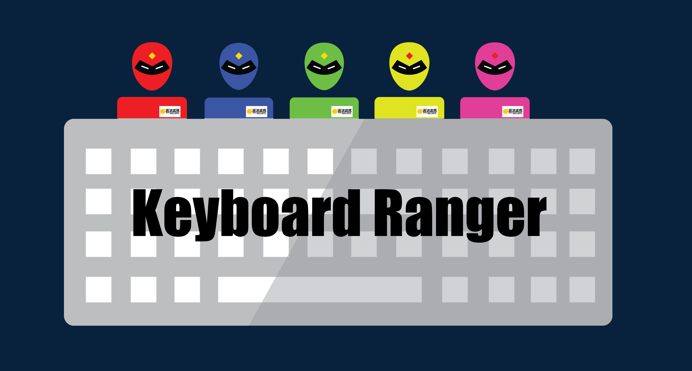
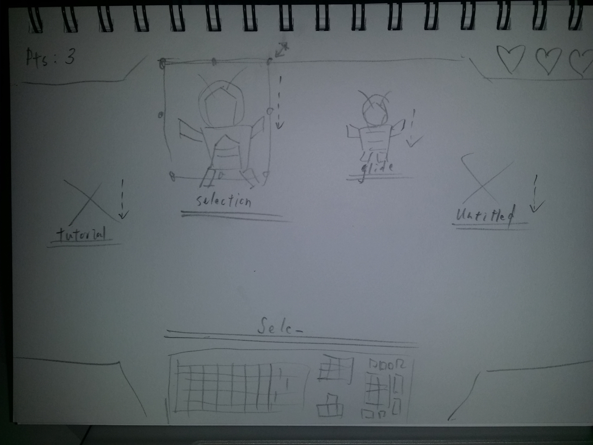
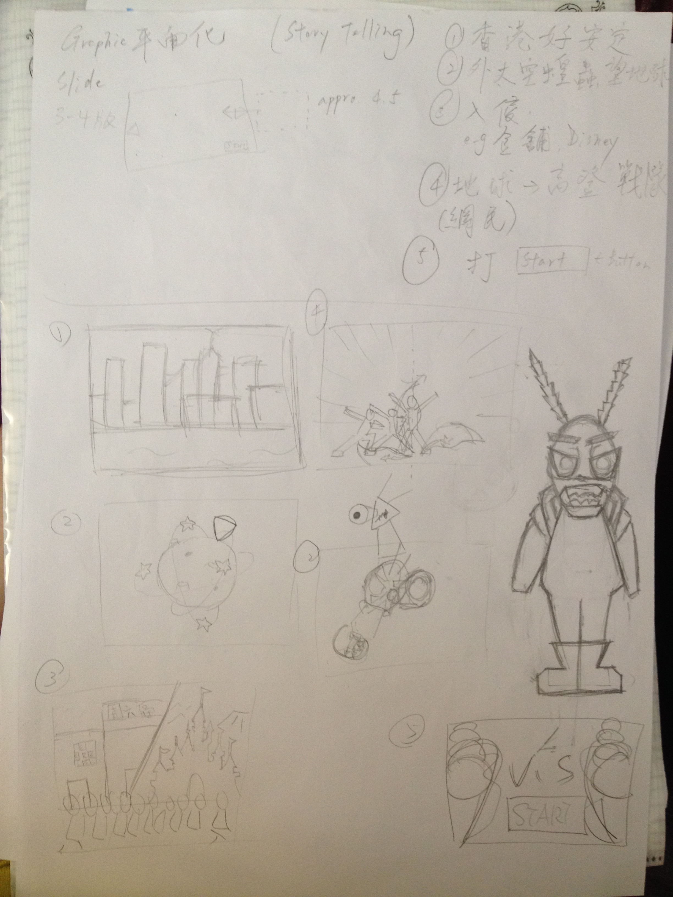
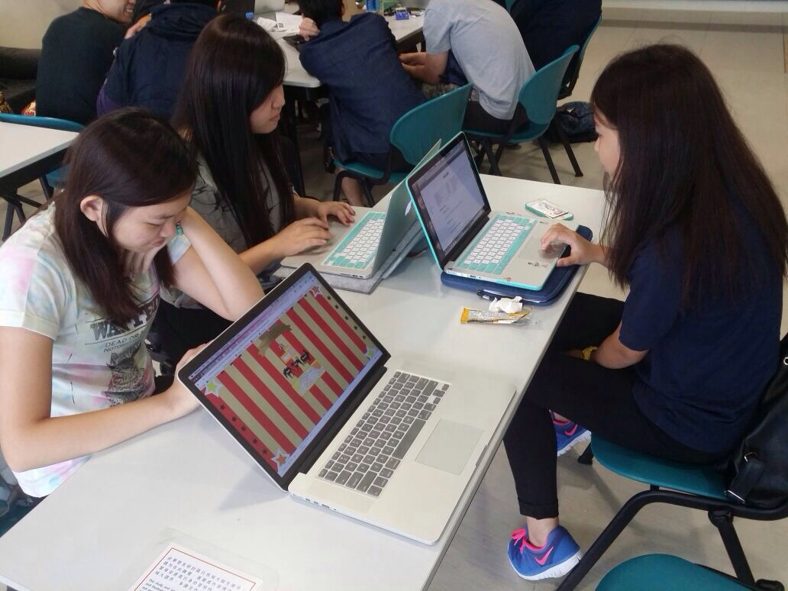
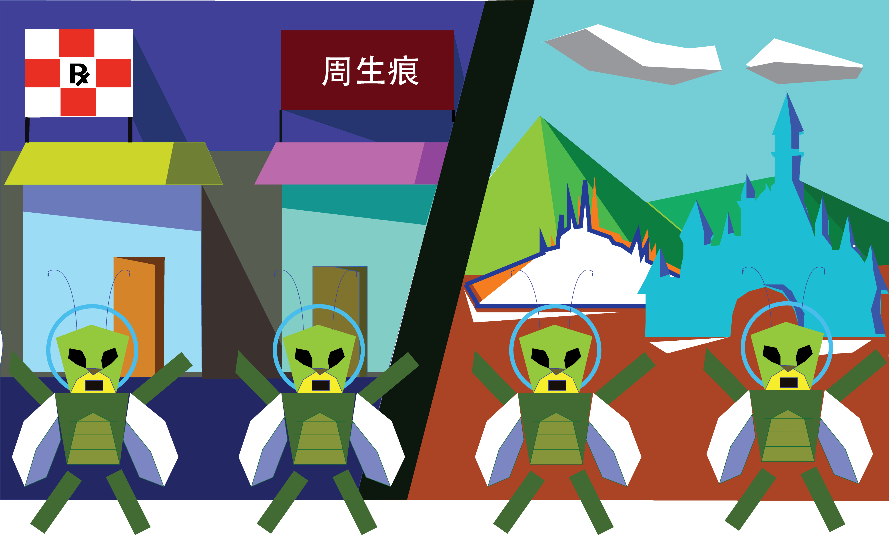
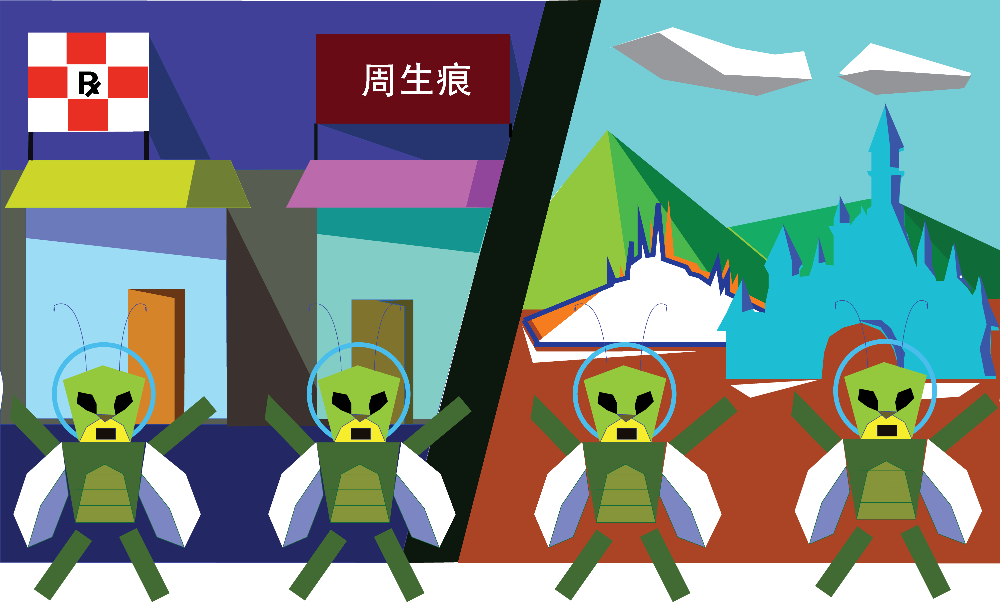
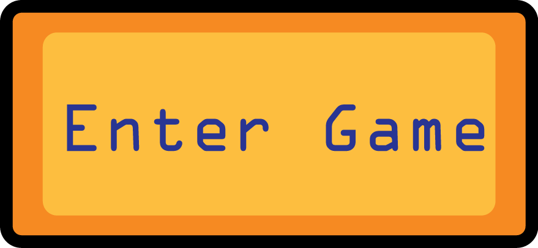

Welcome

WE ARE KEYBOARD RANGER
Team Members
- LAI SUM YI - MANNI: Website and Graphics
- TSE MAN FUNG - JASON: Game and Graphics
- NG HIN WING - VICKY: Game and Slide Show
- PUN KA WAI - CARRIE: Website and Graphics
- LAM HON HEI - TERRENCE: Graphics and Website
Story
Once upon a time, outer space aliens attacked Hong Kong and damaged all the places. But all in sudden, a team of warriors was raised on the Internet and they called themselves, "Keyboard Rangers"!
Keyboard Rangers is a typing game, which is related to social issue. Our goal is to enhance teenagers and even children's awareness in society and social movement by playing our game.
Inspiration
As a university student now, we all are curious in society and what's happening in our home, Hong Kong. While our discussion, we have a lot of ideas on making what kinds of games. First of all, we are thinking of making an online storybook. But then a Facebook post about "locusts" inspires us. Therefore, we next created an imagined story. Finally, the idea and outline of the game have been developed.
How to play??
As a member of the keyboard rangers, all you need to do is type in the characters which show on each alien's bally!!!
BraInStORmINg
This is all we started....
This is the sketch of our graphic design and game setting



Game Coding Technique
- The function,genLetter = generate characters randomly
- String from charCode method, CSS and some math properties = appear on the browser randomly
- An array and background-image of css = random selection of the aliens that behind the characters within 5 png images
- Basic operation= gets the keycode from the keyboard; character disappears when the keycode matches the character which was generated; auto disapperance of unmatched character; Score is added with each match; sound effect with each keydown; scores and level write on the html
- Game level logic= game starts with a 60-seconds count down, generating interval of characters and the passing score increase as the game level increase, if the score reaches a certain level, alert pop up to notify players, stop the basic game operation with a boolean, then the game passes to another level
- Slide show= javascript with jquery using cycle plugin
- Entering the game=we link the final slide and the game with a hyperlink simply using an a tag
- Relative width and height for the background image = the white margin will not exist
Graphics
At the very beginning, we came up a rough idea that using pixel style graphics like Mario Game as our graphic design. However, when we settled down the final theme of our project -- Keyboard Rangers, which is a typing game. Therefore, we decided to use 2D Flat Design style that using simple graphics to bring out the focus of this game and make it more understandable yet attractive. Due to the appropriate colors-combination and shapes, we are able to present our background story and the appearance of game clearly. Here you can see there is a lot of graphics that were applied 2D Flat Design style.
 

Enjoy it
Players will act like one of the Keyboard Rangers and save our beautiful Hong Kong. It's time for you to cooperate with us to complete the mission, ACTION NOW!!
